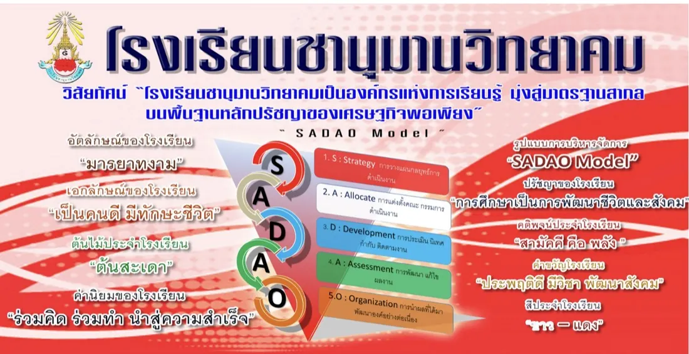

พัฒนาคุณภาพการศึกษาอย่างต่อเนื่องและยั่งยืน
องค์กรแห่งการเรียนรู้ มุ่งพัฒนาการศึกษาสู่มาตรฐานสากล บนพื้นฐานหลักปรัชญาของเศรษฐกิจพอเพียง
👌SADAO Modelร่วมคิด ร่วมทำ นำสู่ความสำเร็จ
สรุปผลการประเมินคุณภาพภายใน ปีการศึกษา 2568
ดูทั้งหมดภาพกิจกรรมเด่น
ดูทั้งหมดผลการประเมินคุณภาพการศึกษา
สรุปผลการประเมินตนเอง (SAR) ตามมาตรฐานการศึกษาขั้นพื้นฐาน
ระดับคุณภาพ : ยอดเยี่ยม (5)
ผลการประเมินรายมาตรฐาน
แนวโน้มคุณภาพการศึกษา 3 ปีย้อนหลัง
คะแนนเฉลี่ยรายมาตรฐาน เปรียบเทียบ 3 ปีการศึกษา (เต็ม 5)
คะแนนเฉลี่ยจากระดับผลการพัฒนาทุกประเด็นพิจารณาในแต่ละมาตรฐาน (ที่มา: SAR ปีการศึกษา 2566–2568)
เกณฑ์การให้ระดับคุณภาพ (คะแนนเฉลี่ยจากการประเมิน เต็ม 5)
หมายเหตุ: ร้อยละคำนวณจากคะแนนเฉลี่ย ÷ 5 × 100 โดยเฉลี่ยจากระดับผลการพัฒนาของทุกประเด็นพิจารณาในแต่ละมาตรฐาน
ข้อมูลเชิงลึกผลการพัฒนาผู้เรียน
ผลสัมฤทธิ์ระดับ 3 ขึ้นไป เปรียบเทียบ 3 ปีการศึกษา
ร้อยละนักเรียน ม.1–ม.6 ที่มีเกรดเฉลี่ยรายวิชาในระดับ 3 ขึ้นไป (ที่มา: SAR 2568)
ผลสัมฤทธิ์ทางการเรียนรายกลุ่มสาระ เปรียบเทียบ 3 ปีการศึกษา
ร้อยละผลสัมฤทธิ์ทางการเรียนเฉลี่ยรายกลุ่มสาระการเรียนรู้ (ที่มา: SAR 2568)
O-NET ปีการศึกษา 2568 (เทียบระดับจังหวัด/สพฐ./ประเทศ)
ชั้นมัธยมศึกษาปีที่ 6
ชั้นมัธยมศึกษาปีที่ 3
แนวโน้มคะแนน O-NET ย้อนหลัง 3 ปีการศึกษา (2566–2568)
ชั้นมัธยมศึกษาปีที่ 6
ชั้นมัธยมศึกษาปีที่ 3
ความสามารถในการอ่าน คิดวิเคราะห์ และเขียน (รายระดับชั้น)
ภาพรวมอยู่ในระดับดีขึ้นไป ร้อยละ 92.87 (ที่มา: SAR 2568)
ร้อยละการผ่านกิจกรรมพัฒนาผู้เรียน
คุณลักษณะอันพึงประสงค์ & การศึกษาต่อ/อาชีพ ม.6
- คุณลักษณะฯ 81.13% — นักเรียนได้รับการประเมินคุณลักษณะอันพึงประสงค์ในระดับดีขึ้นไป (วินัย คุณธรรม จิตสาธารณะ)
- ศึกษาต่ออุดมฯ 57.9% — นักเรียน ม.6 เข้าศึกษาต่อระดับอุดมศึกษา
- ประกอบอาชีพ 25.3% — นักเรียน ม.6 เข้าสู่การประกอบอาชีพ (รวมศึกษาต่อ+อาชีพ ร้อยละ 78.6)
- จิตสาธารณะ 88.30% — ผ่านกิจกรรมเพื่อสังคมและสาธารณประโยชน์
- BMI สมส่วน 70.98% — มีภาวะโภชนาการ (ดัชนีมวลกาย) อยู่ในเกณฑ์สมส่วน
นักเรียน ม.6 เข้าศึกษาต่ออุดมศึกษา ร้อยละ 57.9 และประกอบอาชีพ ร้อยละ 25.3 (รวมร้อยละ 78.6) — ที่มา: SAR 2568
คลังเอกสาร / หลักฐาน
รวบรวมเอกสาร SAR รายงาน และหลักฐานร่องรอยการดำเนินงาน
ผลงานดีเด่น / Best Practice
รางวัลและผลงานดีเด่นของสถานศึกษา ผู้บริหาร ครู และนักเรียน ปีการศึกษา 2568
วิธีปฏิบัติที่เป็นเลิศ (Best Practice)
รางวัลและผลงานดีเด่น
ภาพกิจกรรม
ประมวลภาพกิจกรรมการเรียนการสอนและกิจกรรมพัฒนาผู้เรียน ปีการศึกษา 2568
มาตรฐานการศึกษาขั้นพื้นฐาน
กฎกระทรวงการประกันคุณภาพการศึกษา พ.ศ. 2561 — มาตรฐาน 3 ด้าน
เกี่ยวกับงานประกันคุณภาพ
คณะกรรมการและผู้รับผิดชอบงานประกันคุณภาพภายในสถานศึกษา
โรงเรียนชานุมานวิทยาคม
| รหัสสถานศึกษา | 1037750272 | |
| ที่ตั้ง | 683 หมู่ 5 บ้านยักษ์คุ ต.ชานุมาน อ.ชานุมาน จ.อำนาจเจริญ 37210 | |
| โทรศัพท์ | 090-2745630 | |
| อีเมล | Chanuman_school@hotmail.com | |
| เว็บไซต์ | www.chanu.ac.th | |
| ผู้อำนวยการ | ดร.สมสมัคร วุฒิเจริญกุล | |
| จำนวนนักเรียน | 1,197 คน (ม.1–ม.6) | |
| ครูและบุคลากร | 68 คน (ครู:นักเรียน 1:18) |
วิสัยทัศน์ & พันธกิจ
ที่ตั้งและการเดินทาง
683 หมู่ 5 บ้านยักษ์คุ ต.ชานุมาน อ.ชานุมาน จ.อำนาจเจริญ 37210
รูปแบบการบริหารจัดการ : SADAO Model
